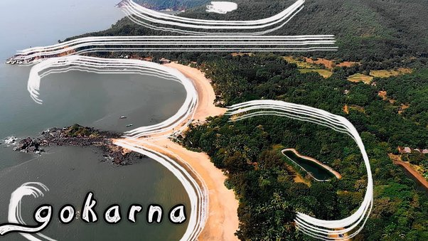
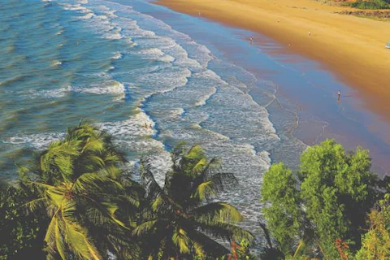
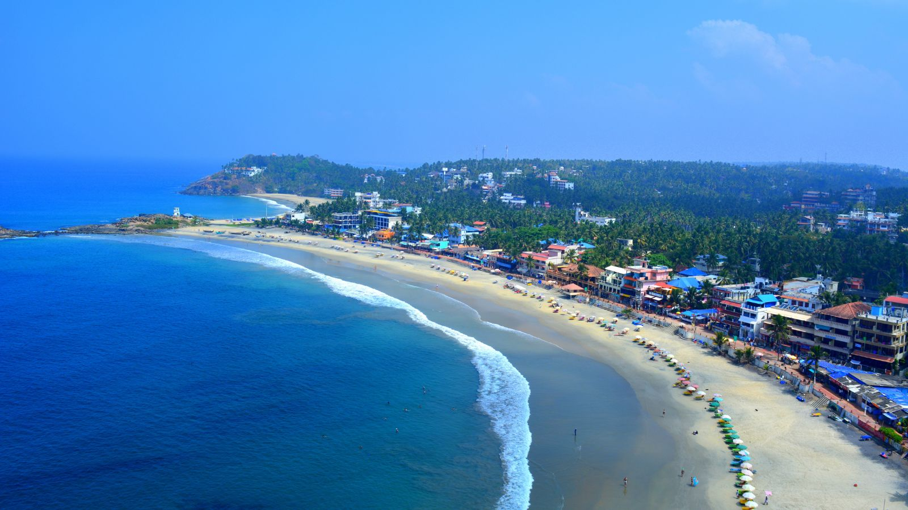
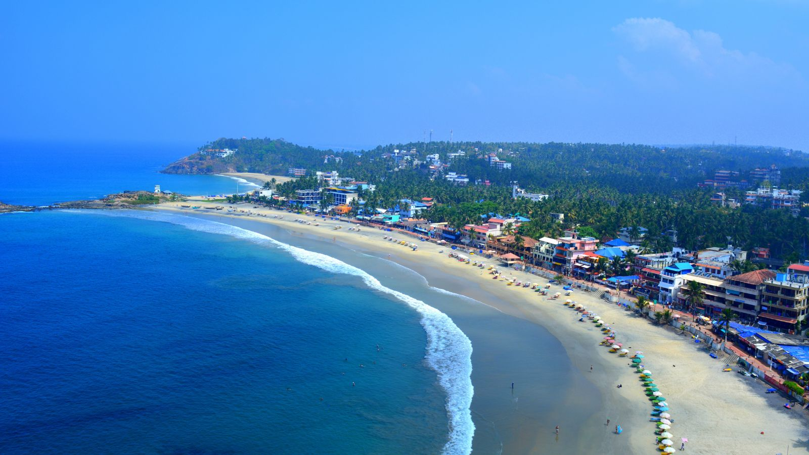
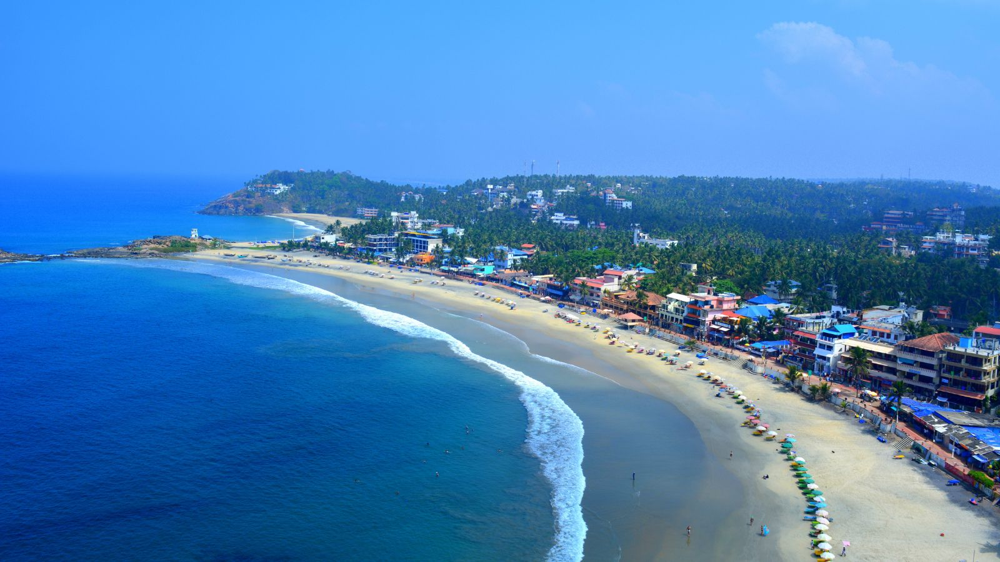

 


Gokarna is a small temple town located in the Uttara Kannada district of Karnataka state in southern India, It has a population of around 20,000. Shiva the most worshipped deity in the town, and to whom its main temple, also known as Mahabaleshwara, is dedicated. At this temple is housed what is believed by some to be the earliest Shiva lingam (Atmalinga). Gokarna is known as one of seven important centers of pilgrimage in Hinduism. It lies on what was once unspoiled coastline at the estuary of the River Aghanashini. Due to an increase in tourism, the character of the town has changed, and is no longer just a center of pilgrimage, though large numbers of Shiva devotees continue to visit for prayer and worship. Gokarna is the one of the best beach destinations for tourists in the whole of India. It is very popular for beach trekkers.
